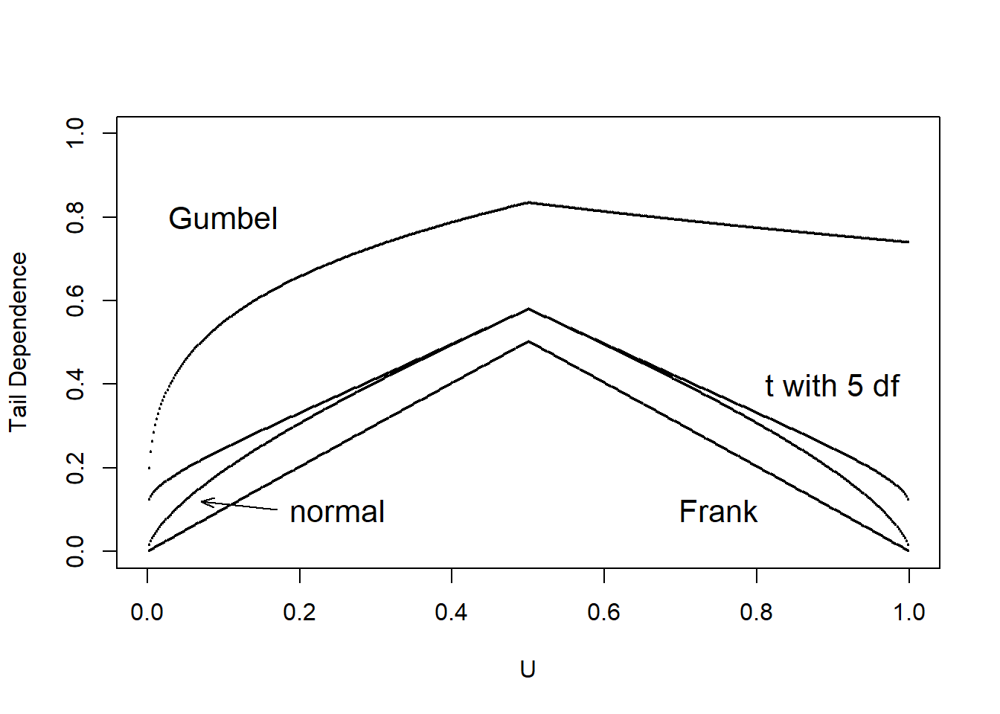

Bab 14 Dependence Modeling
14.1 Variable Types
Pada bagian ini, akan mempelajari :
- Mengklasifikasikan variabel sebagai kualitatif atau kuantitatif.
- Mendeskripsikan variabel multivariat.
Orang, perusahaan, dan entitas lain yang ingin kita pahami dijelaskan dalam dataset oleh karakteristik numerik. Karena karakteristik ini bervariasi berdasarkan entitasnya, mereka umumnya dikenal sebagai variabel. Untuk mengelola sistem asuransi, penting untuk memahami distribusi setiap variabel dan bagaimana mereka saling terkait. Umumnya, dataset memiliki banyak variabel (dimensi tinggi), sehingga berguna untuk memulainya dengan mengklasifikasikannya ke dalam jenis yang berbeda. Seperti yang akan terlihat, klasifikasi ini tidaklah ketat; ada tumpang tindih di antara kelompok-kelompok tersebut. Meskipun demikian, pengelompokan yang dirangkum dalam Tabel 14.1 dan dijelaskan dalam sisa bagian ini memberikan langkah pertama yang solid dalam merangkai sebuah dataset.
Table 14.1. Variable Types
\[ {\small \begin{matrix} \begin{array}{l|l} \hline \textbf{Variable Type} & \textbf{Example} \\\hline Qualitative & \\ \text{Binary} & \text{Sex} \\ \text{Categorical (Unordered, Nominal)} & \text{Territory (e.g., state/province) in which an insured resides} \\ \text{Ordered Category (Ordinal)} & \text{Claimant satisfaction (five point scale ranging from 1=dissatisfied} \\ & ~~~ \text{to 5 =satisfied)} \\\hline Quantitative & \\ \text{Continuous} & \text{Policyholder's age, weight, income} \\ \text{Discrete} & \text{Amount of deductible (0, 250, 500, and 1000)} \\ \text{Count} & \text{Number of insurance claims} \\ \text{Combinations of} & \text{Policy losses, mixture of 0's (for no loss)} \\ ~~~ \text{Discrete and Continuous} & ~~~\text{and positive claim amount} \\ \text{Interval Variable} & \text{Driver Age: 16-24 (young), 25-54 (intermediate),} \\ & ~~~\text{55 and over (senior)} \\ \text{Circular Data} & \text{Time of day measures of customer arrival} \\ \hline Multivariate ~ Variable & \\ \text{High Dimensional Data} & \text{Characteristics of a firm purchasing worker's compensation} \\ & ~~~\text{insurance (location of plants, industry, number of employees,} \\ &~~~\text{and so on)} \\ \text{Spatial Data} & \text{Longitude/latitude of the location an insurance hailstorm claim} \\ \text{Missing Data} & \text{Policyholder's age (continuous/interval) and -99 for} \\ &~~~ `\text{not reported,' that is, missing} \\ \text{Censored and Truncated Data} & \text{Amount of insurance claims in excess of a deductible} \\ \text{Aggregate Claims} & \text{Losses recorded for each claim in a motor vehicle policy.} \\ \text{Stochastic Process Realizations} & \text{The time and amount of each occurrence of an insured loss} \\ \hline \end{array} \end{matrix}} \]
Dalam analisis data, penting untuk memahami jenis variabel yang sedang Anda kerjakan. Sebagai contoh, pertimbangkan sepasang variabel acak (Coverage,Claim) dari data LGPIF yang diperkenalkan dalam Bagian 1.3 . Kita ingin tahu apakah distribusi Coverage bergantung pada distribusi Claim atau apakah keduanya saling independen secara statistik. Kita juga ingin tahu bagaimana distribusi Claim tergantung pada variabel EntityType . Karena variabel EntityType termasuk dalam kelas variabel yang berbeda, pemodelan ketergantungan antara Claim dan Coverage mungkin memerlukan teknik yang berbeda dari yang digunakan untuk Claim dan EntityType . ### Qualitative Variables
Di sub-bagian ini, akan mempelajari:
- Mengklasifikasikan variabel kualitatif sebagai nominal atau ordinal
- Mendeskripsikan variabel biner
Variabel kualitatif, atau kategorikal, adalah variabel yang pengukurannya menunjukkan keanggotaan dalam satu set grup atau kategori. Sebagai contoh, jika Anda sedang mengkodekan lokasi tempat tinggal tertanggung menjadi bagian utara (1), selatan (2), dan lainnya (3). Variabel lokasi ini adalah contoh variabel nominal, di mana level-levelnya tidak memiliki urutan alami. Analisis variabel nominal tidak harus bergantung pada label kategori. Sebagai contoh, jika saya menggunakan kode 1, 2, 3 untuk utara, selatan, dan lainnya, seharusnya saya mendapatkan set statistik ringkasan yang sama jika saya menggunakan kode 2, 1, 3, yaitu menukar urutan utara dan selatan.
Di sisi lain, variabel ordinal adalah jenis variabel kategorikal di mana terdapat urutan. Sebagai contoh, dalam survei untuk melihat seberapa puas pelanggan dengan departemen pelayanan klaim kami, kita dapat menggunakan skala lima poin yang berkisar dari 1 yang berarti tidak puas hingga 5 yang berarti puas. Variabel ordinal menyediakan urutan yang jelas untuk level-level variabel, tetapi tingkat pemisahan antar level tidak diketahui.
Variabel biner adalah jenis khusus variabel kategorikal di mana hanya ada dua kategori yang umumnya disimbolkan dengan 0 dan 1. Sebagai contoh, kita dapat mengkodekan variabel dalam dataset sebagai 1 jika tertanggung adalah perempuan dan 0 jika laki-laki.
14.1.1 Quantitative Variables
Di sub-bagian ini, Anda akan belajar:
Membedakan antara variabel kontinu dan variabel diskrit Menggunakan kombinasi variabel kontinu dan diskrit Mendeskripsikan data berbentuk lingkaran Berbeda dengan variabel kualitatif, variabel kuantitatif adalah variabel di mana setiap level numerik adalah hasil dari suatu skala sehingga jarak antara dua level skala memiliki makna. Variabel kontinu adalah variabel yang dapat mengambil nilai apa pun dalam interval tertentu. Misalnya, umur, berat badan, atau pendapatan tertanggung dapat direpresentasikan sebagai variabel kontinu. Sebaliknya, variabel diskrit adalah variabel yang hanya dapat mengambil sejumlah nilai yang terbatas dalam interval tertentu. Misalnya, saat memeriksa pilihan tertanggung mengenai jumlah potongan klaim, mungkin hanya ada nilai 0, 250, 500, dan 1000 sebagai hasil yang mungkin. Seperti variabel ordinal, nilai-nilai ini mewakili kategori yang berbeda yang memiliki urutan. Namun, berbeda dengan variabel ordinal, perbedaan numerik antar level memiliki makna ekonomi. Jenis khusus dari variabel diskrit adalah variabel hitungan, yang nilainya adalah bilangan bulat nonnegatif. Sebagai contoh, kita akan tertarik dengan jumlah klaim yang timbul dari suatu polis selama periode tertentu.
Beberapa variabel pada dasarnya merupakan kombinasi dari komponen diskrit dan kontinu. Misalnya, ketika kita menganalisis kerugian tertanggung, kita akan menemui hasil diskrit di nol yang mewakili tidak ada kerugian tertanggung, dan jumlah kontinu untuk hasil positif yang mewakili jumlah kerugian tertanggung. Variasi menarik lainnya adalah variabel interval, yang memberikan rentang hasil yang mungkin.
Data berbentuk lingkaran merupakan kategori menarik yang biasanya tidak dianalisis oleh perusahaan asuransi. Sebagai contoh data berbentuk lingkaran, misalkan Anda memantau panggilan ke pusat layanan pelanggan dan ingin mengetahui kapan waktu puncak panggilan tiba. Dalam konteks ini, waktu dalam sehari dapat dianggap sebagai variabel dengan realisasi pada sebuah lingkaran, misalnya bayangkan gambar analog dari jam. Untuk data berbentuk lingkaran, jarak antara pengamatan pada pukul 00:15 dan 00:45 sama dekatnya dengan pengamatan pada pukul 23:45 dan 00:15 (konvensi HH:MM mengacu pada jam dan menit).
14.1.2 Multivariate Variables
Di sub-bagian ini, Anda akan belajar:
Membedakan antara data univariat dan multivariat Menangani variabel yang hilang Data asuransi umumnya bersifat multivariat dalam arti bahwa kita dapat mengambil banyak pengukuran pada satu entitas. Misalnya, ketika mempelajari kerugian yang terkait dengan rencana kompensasi pekerja suatu perusahaan, kita mungkin ingin mengetahui lokasi pabrik manufaktur, industri di mana perusahaan beroperasi, jumlah karyawan, dan sebagainya. Strategi umum untuk menganalisis data multivariat adalah dengan memulai dengan memeriksa masing-masing variabel secara terpisah dari yang lain. Ini dikenal sebagai pendekatan univariat.
Sebaliknya, untuk beberapa variabel, tidak masuk akal hanya melihat aspek satu dimensi saja. Misalnya, perusahaan asuransi biasanya mengorganisir data spasial berdasarkan garis bujur dan garis lintang untuk menganalisis lokasi klaim asuransi terkait cuaca akibat badai salju. Hanya memiliki satu angka, baik garis bujur atau garis lintang, memberikan sedikit informasi dalam memahami lokasi geografis.
Kasus khusus lain dari variabel multivariat, yang kurang jelas, melibatkan pengkodean untuk data yang hilang. Secara historis, beberapa paket statistik menggunakan angka -99 untuk melaporkan saat variabel, seperti usia tertanggung, tidak tersedia atau tidak dilaporkan. Hal ini menyebabkan banyak analis yang tidak curiga memberikan statistik aneh saat merangkum sekumpulan data. Ketika data hilang, lebih baik untuk memikirkan variabel tersebut memiliki dua dimensi, satu untuk menunjukkan apakah variabel tersebut dilaporkan atau tidak, dan yang kedua menyediakan usia (jika dilaporkan). Demikian pula, data asuransi umumnya dicensored dan dipotong. Kami mengacu pada Bagian 4.3 untuk informasi lebih lanjut mengenai data yang dicensored dan dipotong. Klaim agregat, yang dijelaskan dalam Bab 5, juga dapat dikodekan sebagai jenis variabel multivariat khusus lainnya.
Mungkin jenis variabel multivariat yang paling rumit adalah realisasi dari suatu proses stokastik. Anda akan mengingat bahwa proses stokastik hanya merupakan kumpulan variabel acak. Misalnya, dalam asuransi, kita mungkin memikirkan waktu klaim yang tiba di perusahaan asuransi dalam jangka waktu satu tahun. Ini adalah variabel berdimensi tinggi yang secara teoritis memiliki dimensi tak terhingga. Teknik khusus diperlukan untuk memahami realisasi dari proses stokastik ini, yang tidak akan dibahas di sini.
14.2 Classic Measures of Scalar Associations
Pada bagian ini, akan mempelajari:
-Mengestimasi korelasi menggunakan metode Pearson -Menggunakan ukuran berbasis peringkat seperti Spearman, Kendall untuk mengestimasi korelasi -Mengukur ketergantungan menggunakan rasio odds, Pearson chi-square, dan statistik uji likelihood ratio -Menggunakan korelasi berbasis normal untuk mengkuantifikasi hubungan yang melibatkan variabel ordinal
14.2.1 Association Measures for Quantitative Variables
Untuk bagian ini, pertimbangkan sepasang variabel acak \((X,Y)\) dengan fungsi distribusi bersama \(F(\cdot)\), dan sampel acak \((X_i,Y_i)\), i=1,…,n. Untuk kasus kontinu, anggap \(F(\cdot)\) memiliki marginals yang mutlak kontinu dengan fungsi densitas marginal.
14.2.1.1 Pearson Correlation
Definisikan fungsi kovariansi sampel \(\widehat{Cov}(X,Y) = \frac{1}{n} \sum_{i=1}^n (X_i - \bar{X})(Y_i - \bar{Y})\), di mana \(\bar{X}\) dan \(\bar{Y}\) adalah rata-rata sampel dari X dan Y secara berturut-turut. Maka, korelasi momen-produk (Pearson) dapat ditulis sebagai
\[ r = \frac{\widehat{Cov}(X,Y)}{\sqrt{\widehat{Cov}(X,X)\widehat{Cov}(Y,Y)}} = \frac{\widehat{Cov}(X,Y)}{\sqrt{\widehat{Var}(X)}\sqrt{\widehat{Var}(Y)}}. \]
Statistik korelasi r secara luas digunakan untuk menggambarkan hubungan linier antara variabel acak. Ini adalah pengestimasi (nonparametrik) dari parameter korelasi ρ, yang didefinisikan sebagai kovariansi dibagi dengan perkalian simpangan baku.
Statistik ini memiliki beberapa fitur penting. Tidak seperti pengestimasi regresi, ia simetris antara variabel acak, sehingga korelasi antara X dan Y sama dengan korelasi antara Y dan X. Statistik ini tidak berubah oleh transformasi linear dari variabel acak (hingga perubahan tanda), sehingga kita dapat mengalikan variabel acak atau menambahkan konstanta seperti yang berguna untuk interpretasi. Rentang statistik ini adalah [-1,1] yang tidak bergantung pada distribusi X maupun Y.
Selain itu, dalam kasus independensi, koefisien korelasi r adalah 0. Namun, diketahui bahwa korelasi nol secara umum tidak menyiratkan independensi, satu pengecualian adalah dalam kasus variabel acak yang terdistribusi secara normal. Statistik korelasi r juga merupakan pengestimasi (likelihood maksimum) dari parameter asosiasi untuk distribusi normal bivariat. Jadi, untuk data yang terdistribusi secara normal, statistik korelasi r dapat digunakan untuk menilai independensi. Untuk interpretasi tambahan dari statistik yang terkenal ini, pembaca dapat merujuk ke Lee Rodgers dan Nicewander (1998).
### Pearson correlation between Claim and Coverage
r<-cor(Claim,Coverage, method = c("pearson"))
round(r,2)
Output:
[1] 0.31
### Pearson correlation between Claim and log(Coverage)
r<-cor(Claim,log(Coverage), method = c("pearson"))
round(r,2)
Output:
[1] 0.114.2.2 Rank Based Measures
14.2.2.1 Spearman’s Rho
Koefisien korelasi Pearson memiliki kelemahan bahwa ia tidak invarian terhadap transformasi nonlinier dari data. Misalnya, korelasi antara X dan logY dapat sangat berbeda dari korelasi antara X dan Y. Seperti yang kita lihat dari kode R untuk statistik korelasi Pearson di atas, statistik korelasi r antara variabel penilaian Coverage dalam jutaan dolar logaritmik dan variabel jumlah Claim dalam dolar adalah 0,1 dibandingkan dengan 0,31 ketika kita menghitung korelasi antara variabel penilaian Coverage dalam jutaan dolar dan variabel jumlah Claim dalam dolar. Batasan ini adalah salah satu alasan untuk mempertimbangkan statistik alternatif.
Ukuran alternatif korelasi didasarkan pada peringkat data. Misalkan R(Xj) menunjukkan peringkat Xj dari sampel X1,…,Xn dan begitu pula dengan R(Yj). Misalkan R(X)=(R(X1),…,R(Xn))′ menunjukkan vektor peringkat, dan begitu pula dengan R(Y). Misalnya, jika n=3 dan X=(24,13,109), maka R(X)=(2,1,3). Pengenalan komprehensif tentang statistik peringkat dapat ditemukan dalam, misalnya, Hettmansperger (1984). Selain itu, peringkat dapat digunakan untuk mendapatkan fungsi distribusi empiris, lihat Bagian 4.1.1 untuk informasi lebih lanjut tentang fungsi distribusi empiris.
Dengan ini, ukuran korelasi Spearman (1904) adalah hanya korelasi momen-produk yang dihitung pada peringkat:
\[ r_S = \frac{\widehat{Cov}(R(X),R(Y))}{\sqrt{\widehat{Cov}(R(X),R(X))\widehat{Cov}(R(Y),R(Y))}} = \frac{\widehat{Cov}(R(X),R(Y))}{(n^2-1)/12} . \]
Selanjutnya dapat memperoleh statistik korelasi Spearman rS menggunakan fungsi cor() di R dan memilih metode spearman. Dari hasil di bawah ini, korelasi Spearman antara variabel penilaian Coverage dalam jutaan dolar dan variabel jumlah Claim dalam dolar adalah 0,41.
### Spearman correlation between Claim and Coverage ###
rs<-cor(Claim,Coverage, method = c("spearman"))
round(rs,2)
### Spearman correlation between Claim and log(Coverage) ###
rs<-cor(Claim,log(Coverage), method = c("spearman"))
round(rs,2)Kita dapat menunjukkan bahwa statistik korelasi Spearman tidak berubah saat dilakukan transformasi yang secara ketat meningkat. Dari Kode R untuk statistik korelasi Spearman di atas, didapatkan rS=0,41 antara variabel penilaian Coverage dalam jutaan dolar dalam skala logaritmik dan variabel jumlah Claim dalam dolar.
14.2.2.2 Kendall’s Tau
Salah satu ukuran alternatif yang menggunakan peringkat didasarkan pada konsep kesepakatan. Pasangan observasi (X, Y) dikatakan sesuai (tidak sesuai) jika observasi dengan nilai X yang lebih besar juga memiliki nilai Y yang lebih besar (lebih kecil). Kemudian \(\Pr(concordance) = \Pr[ (X_1-X_2)(Y_1-Y_2) >0 ]\), \(\Pr(discordance) = \Pr[ (X_1-X_2)(Y_1-Y_2) <0 ]\), \(\Pr(tie) = \Pr[ (X_1-X_2)(Y_1-Y_2) =0 ]\), dan
\[ \begin{array}{rl} \tau(X,Y) &= \Pr(concordance) - \Pr(discordance) \\ & = 2\Pr(concordance) - 1 + \Pr(tie). \end{array} \]
Untuk mengestimasinya, pasangan \((X_i, Y_i)\) dan \((X_j, Y_j)\) dikatakan sesuai jika perkalian \(sgn(X_j-X_i)sgn(Y_j-Y_i)\) sama dengan 1 dan tidak sesuai jika perkalian tersebut sama dengan -1. Di sini, sgn(x) = 1, 0, -1 untuk x > 0, x = 0, x < 0, secara berturut-turut. Dengan ini, kita dapat mengungkapkan ukuran asosiasi Kendall (1938), yang dikenal sebagai tau Kendall, sebagai
\[ \begin{array}{rl} \hat{\tau} &= \frac{2}{n(n-1)} \sum_{i<j} ~sgn(X_j-X_i) \times sgn(Y_j-Y_i)\\ &= \frac{2}{n(n-1)} \sum_{i<j} ~sgn(R(X_j)-R(X_i)) \times sgn(R(Y_j)-R(Y_i)) . \end{array} \]
Menariknya, Hougaard (2000), halaman 137, mengatributkan penemuan awal dari statistik ini kepada Fechner (1897), mencatat bahwa penemuan Kendall adalah penemuan independen dan lebih lengkap daripada karya asli.
Anda dapat memperoleh tau Kendall menggunakan fungsi cor() di R dan memilih metode kendall. Dari di bawah, τ^ = 0,32 antara variabel penilaian Coverage dalam jutaan dolar dan variabel jumlah Claim dalam dolar. Ketika ada seri dalam data, fungsi cor() menghitung tau_b Kendall seperti yang diusulkan oleh Kendall (1945).
Kode R untuk Tau Kendall
### Kendall's tau correlation between Claim and Coverage ###
tau<-cor(Claim,Coverage, method = c("kendall"))
round(tau,2)
### Kendall's tau correlation between Claim and log(Coverage) ###
tau<-cor(Claim,log(Coverage), method = c("kendall"))
round(tau,2)Selain itu, untuk menunjukkan bahwa tau Kendall tidak berubah saat dilakukan transformasi yang meningkat secara ketat, kita melihat bahwa τ^ = 0,32 antara variabel penilaian Coverage dalam jutaan dolar dalam skala logaritmik dan variabel jumlah Claim dalam dolar.
14.2.3 Nominal Variables
14.2.3.1 Bernoulli Variables
Untuk melihat mengapa ukuran ketergantungan untuk variabel kontinu mungkin tidak menjadi yang terbaik untuk variabel diskrit, mari kita fokus pada kasus variabel Bernoulli yang menghasilkan hasil biner sederhana, 0 dan 1. Untuk notasi, mari kita anggap \(\pi_{jk} = \Pr(X=j, Y=k)\) untuk j,k=0,1 dan πX = Pr(X=1) serta hal yang sama untuk πY. Maka, versi populasi dari korelasi momen-produk (Pearson) dapat dengan mudah dilihat sebagai
\[\rho = \frac{\pi_{11} - \pi_X \pi_Y}{\sqrt{\pi_X(1-\pi_X)\pi_Y(1-\pi_Y)}} .\]
Berbeda dengan kasus data kontinu, ukuran ini tidak mungkin mencapai batas-batas interval [-1,1]. Untuk melihat ini, mahasiswa probabilitas mungkin mengingat batas Fréchet-Höeffding untuk distribusi bersama yang ternyata adalah \(\max\{0, \pi_X+\pi_Y-1\} \le \pi_{11} \le \min\{\pi_X,\pi_Y\}\) untuk probabilitas bersama ini. (Diskusi lebih lanjut tentang batas ini ada di Bagian 14.5.4.1.) Batasan pada probabilitas bersama ini memberlakukan pembatasan tambahan pada korelasi Pearson. Sebagai ilustrasi, anggaplah probabilitas yang sama \(\pi_X =\pi_Y = \pi > 1/2\). Maka, batas bawahnya adalah
\[ \begin{eqnarray*} \frac{2\pi - 1 - \pi^2}{\pi(1-\pi)} = -\frac{1-\pi}{\pi} . \end{eqnarray*} \]
Sebagai contoh, jika π = 0,8, maka nilai terkecil yang dapat dicapai oleh korelasi Pearson adalah -0,25. Secara umum, terdapat batasan pada ρ yang bergantung pada πX dan πY yang membuat interpretasi ukuran ini menjadi sulit.
Seperti yang dicatat oleh Bishop, Fienberg, dan Holland (1975) (halaman 382), jika koefisien korelasi ini dipangkatkan dua, maka kita akan mendapatkan statistik chi-kuadrat Pearson (diperkenalkan di Bagian 2.7). Meskipun terdapat masalah batas yang dijelaskan di atas, fitur ini membuat koefisien korelasi Pearson menjadi pilihan yang baik untuk menggambarkan ketergantungan dengan data biner.
Sebagai ukuran alternatif untuk variabel Bernoulli, rasio odds diberikan oleh
\[ \begin{eqnarray*} OR(\pi_{11}) = \frac{\pi_{11} \pi_{00}}{\pi_{01} \pi_{10}} = \frac{\pi_{11} \left( 1+\pi_{11}-\pi_X -\pi_Y\right)}{(\pi_X-\pi_{11})(\pi_Y- \pi_{11})} . \end{eqnarray*} \]
Perhitungan yang menyenangkan menunjukkan bahwa OR(z) adalah 0 pada batas bawah Fréchet-Höeffding \(z= \max\{0, \pi_X+\pi_Y-1\}\) dan tak terhingga pada batas atas \(z=\min\{\pi_X,\pi_Y\}\). Dengan demikian, batasan pada ukuran ini tidak bergantung pada probabilitas marginal πX dan πY, sehingga lebih mudah untuk menginterpretasikan ukuran ini.
Seperti yang dicatat oleh Yule (1900), rasio odds tidak berubah dengan pemberian label 0 dan 1. Selain itu, rasio odds tidak berubah terhadap margin dalam arti bahwa kita dapat menskalakan πX dan πY dengan konstanta positif dan rasio odds tetap tidak berubah. Secara khusus, misalkan ai, bj adalah set konstanta positif dan
\[ \begin{eqnarray*} \pi_{ij}^{new} &=& a_i b_j \pi_{ij} \end{eqnarray*} \]
dan \(\sum_{ij} \pi_{ij}^{new}=1.\) Maka,
\[ \begin{eqnarray*} OR^{new} = \frac{(a_1 b_1 \pi_{11})( a_0 b_0 \pi_{00})}{(a_0 b_1 \pi_{01})( a_1 b_0\pi_{10})} = \frac{\pi_{11} \pi_{00}}{\pi_{01} \pi_{10}} =OR^{old} . \end{eqnarray*} \]
Untuk bantuan tambahan dalam interpretasi, Yule mengusulkan dua transformasi untuk rasio odds, yang pertama dalam Yule (1900),
\[ \begin{eqnarray*} \frac{OR-1}{OR+1}, \end{eqnarray*} \]
dan yang kedua dalam Yule (1912),
\[ \begin{eqnarray*} \frac{\sqrt{OR}-1}{\sqrt{OR}+1}. \end{eqnarray*} \]
Meskipun statistik ini memberikan informasi yang sama dengan rasio odds asli OR, mereka memiliki keuntungan dapat mengambil nilai di interval [-1,1], sehingga lebih mudah untuk diinterpretasikan.
Di bagian selanjutnya, kita juga akan melihat bahwa distribusi margin tidak memiliki efek pada Fréchet-Höeffding dari korelasi tetrakorik, ukuran asosiasi lainnya, lihat juga Joe (2014), halaman 48.
Dari Tabel 14.2, \(OR(\pi_{11})=\frac{1611(956)}{897(2175)}=0.79\). Anda dapat memperoleh OR(π11) menggunakan fungsi oddsratio() dari pustaka epitools di R. Dari output di bawah ini, OR(π11) = 0,79 untuk variabel biner NoClaimCredit dan Fire5 dari data LGPIF.
Table 14.2. 2 × 2 Table of Counts for Fire5 and NoClaimCredit
\[ {\small \begin{matrix} \begin{array}{l|rr|r} \hline & \text{Fire5} & & \\ \text{NoClaimCredit} & 0 & 1 & \text{Total} \\ \hline 0 & 1611 & 2175 & 3786 \\ 1 & 897 & 956 & 1853 \\ \hline \text{Total} & 2508 & 3131 & 5639 \\ \hline \end{array} \end{matrix}} \]
library(epitools)
oddsratio(NoClaimCredit, Fire5,method = c("wald"))$measure14.2.3.2 Categorical Variables
Secara umum, mari kita anggap \((X,Y)\) sebagai pasangan bivariat yang memiliki ncatX dan ncatY kategori, masing-masing. Untuk tabel dua arah dari frekuensi, mari njk menjadi jumlah pada baris j, kolom k. Mari nj⋅ menjadi total margin baris, dan n⋅k menjadi total margin kolom, dan \(n=\sum_{j,k} n_{j,k}\). Definisikan statistik chi-square Pearson sebagai
\[ \begin{eqnarray*} \chi^2 = \sum_{jk} \frac{(n_{jk}- n_{j\cdot}n_{\cdot k}/n)^2}{n_{j\cdot}n_{\cdot k}/n} . \end{eqnarray*} \]
Statistik uji rasio kemungkinan adalah
\[ \begin{eqnarray*} G^2 = 2 \sum_{jk} n_{jk} \log\frac{n_{jk}}{n_{j\cdot}n_{\cdot k}/n} . \end{eqnarray*} \]
Dalam asumsi kemandirian, baik \(χ^2\) dan \(G^2\) memiliki distribusi chi-square asymptotic dengan derajat kebebasan \((ncat_X-1)(ncat_Y-1)\).
Untuk membantu melihat apa yang diestimasikan oleh statistik ini, mari \(\pi_{jk} = \Pr(X=j, Y=k)\), dan \(\pi_{X,j}=\Pr(X=j)\), dan begitu pula untuk πY,k. Dengan mengasumsikan bahwa njk/n≈πjk untuk n yang besar, dan begitu pula untuk probabilitas marginal, kita memiliki
\[ \begin{eqnarray*} \frac{\chi^2}{n} \approx \sum_{jk} \frac{(\pi_{jk}- \pi_{X,j}\pi_{Y,k})^2}{\pi_{X,j}\pi_{Y,k}} \end{eqnarray*} \]
dan
\[ \begin{eqnarray*} \frac{G^2}{n} \approx 2 \sum_{jk} \pi_{jk} \log\frac{\pi_{jk}}{\pi_{X,j}\pi_{Y,k}} . \end{eqnarray*} \]
Dalam hipotesis nol kemandirian, kita memiliki πjk=πX,jπY,k, dan jelas dari perkiraan ini bahwa kita mengharapkan statistik ini akan kecil di bawah hipotesis ini.
Pendekatan klasik, seperti yang dijelaskan dalam Bishop, Fienberg, dan Holland (1975) (halaman 374), membedakan antara pengujian kemandirian dan ukuran asosiasi. Yang pertama dirancang untuk mendeteksi apakah hubungan ada, sedangkan yang terakhir dimaksudkan untuk menilai jenis dan tingkat hubungan. Kami mengakui perbedaan tujuan ini tetapi juga kurang peduli dengan perbedaan ini untuk aplikasi aktuaria.
Table 14.3. Two-way Table of Counts for EntityType and NoClaimCredit
\[ {\small \begin{matrix} \begin{array}{l|rr} \hline & \text{NoClaimCredit} & \\ \text{EntityType} & 0 & 1 \\ \hline \text{City} & 644 & 149 \\ \text{County} & 310 & 18 \\ \text{Misc} & 336 & 273 \\ \text{School} & 1103 & 494 \\ \text{Town} & 492 & 479 \\ \text{Village} & 901 & 440 \\ \hline \end{array} \end{matrix}} \]
Anda dapat memperoleh statistik chi-square Pearson menggunakan fungsi chisq.test() dari perpustakaan MASS di R. Di sini, kita menguji apakah variabel EntityType independen dari variabel NoClaimCredit menggunakan Tabel 14.3.
Kode R untuk Statistik Chi-square Pearson
library(MASS)
table = table(EntityType, NoClaimCredit)
chisq.test(table)Karena nilai p kurang dari tingkat signifikansi 0,05, kita menolak hipotesis nol bahwa EntityType independen dari NoClaimCredit.
Selain itu, Anda dapat memperoleh statistik uji rasio kemungkinan menggunakan fungsi likelihood.test() dari perpustakaan Deducer di R. Dari hasil di bawah, kita menguji apakah EntityType independen dari NoClaimCredit dari data LGPIF. Kesimpulan yang sama ditarik seperti pada uji chi-square Pearson.
Kode R untuk Statistik Uji Rasio Kemungkinan
library(Deducer)
likelihood.test(EntityType, NoClaimCredit)14.2.4 Ordinal Variables
Ketika analis berpindah dari skala kontinu ke skala nominal, ada dua sumber utama kehilangan informasi (Bishop, Fienberg, dan Holland, 1975, halaman 343). Yang pertama adalah membagi pengukuran kontinu yang tepat menjadi kelompok-kelompok. Yang kedua adalah kehilangan urutan dari kelompok-kelompok tersebut. Oleh karena itu, masuk akal untuk menjelaskan apa yang dapat kita lakukan dengan variabel yang berada dalam kelompok-kelompok diskrit tetapi dengan urutan yang diketahui.
Seperti yang dijelaskan di Bagian 14.1.1, variabel ordinal memberikan urutan yang jelas dari tingkat-tingkat variabel tetapi jarak antara tingkat-tingkat tersebut tidak diketahui. Hubungan asosiasi secara tradisional diukur secara parametrik menggunakan korelasi berbasis normal dan secara nonparametrik menggunakan korelasi Spearman dengan peringkat terikat.
14.2.4.1 Parametric Approach Using Normal Based Correlations
Misalkan (y1, y2) adalah pasangan bivariat dengan nilai diskrit pada m1, …, m2. Untuk tabel dua arah dari hitungan ordinal, misalkan nst adalah jumlah dalam baris s dan kolom t. Misalkan \((n_{m_1\cdot}, \ldots, n_{m_2\cdot})\) adalah total margin baris, \((n_{\cdot m_1}, \ldots, n_{\cdot m_2}))\) adalah total margin kolom, dan \(n=\sum_{s,t} n_{s,t}\)
Misalkan \(\hat{\xi}_{1s} = \Phi^{-1}((n_{m_1}+\cdots+n_{s\cdot})/n)\) untuk \(s=m_1, ..., m_2\) menjadi titik potong dan demikian pula untuk \(\hat{\xi}_{2t}\). Korelasi polikorik, berdasarkan prosedur estimasi dua langkah, adalah
\[ \begin{array}{cr} \hat{\rho_N} &=\text{argmax}_{\rho} \sum_{s=m_1}^{m_2} \sum_{t=m_1}^{m_2} n_{st} \log\left\{ \Phi_2(\hat{\xi}_{1s}, \hat{\xi}_{2t};\rho) -\Phi_2(\hat{\xi}_{1,s-1}, \hat{\xi}_{2t};\rho) \right.\\ & \left. -\Phi_2(\hat{\xi}_{1s}, \hat{\xi}_{2,t-1};\rho) +\Phi_2(\hat{\xi}_{1,s-1}, \hat{\xi}_{2,t-1};\rho) \right\} . \end{array} \]
Hal ini disebut korelasi tetrakorik untuk variabel biner.
Table 14.4. Two-way Table of Counts for Alarm Credit and NoClaimCredit
\[ {\small \begin{matrix} \begin{array}{c|rr} \hline & \text{NoClaimCredit} & \\ \text{AlarmCredit} & 0 & 1 \\ \hline 1 & 1669 & 942 \\ 2 & 121 & 118 \\ 3 & 195 & 132 \\ 4 & 1801 & 661 \\ \hline \end{array} \end{matrix}} \]
Anda dapat memperoleh korelasi polikorik atau tetrakorik menggunakan fungsi polychoric() atau tetrachoric() dari pustaka psych di R. Korelasi polikorik diilustrasikan menggunakan Tabel 14.4. Di sini, ρ^N=−0.14, yang berarti terdapat hubungan negatif antara AlarmCredit dan NoClaimCredit.
Kode R untuk Korelasi Polikorik
library(psych)
AlarmCredit<-as.numeric(ifelse(Insample$AC00==1,"1",
ifelse(Insample$AC05==1,"2",
ifelse(Insample$AC10==1,"3",
ifelse(Insample$AC15==1,"4",0)))))
x <- table(AlarmCredit,NoClaimCredit)
rhoN<-polychoric(x,correct=FALSE)$rho
round(rhoN,2)14.2.5 Interval Variables
Seperti yang dijelaskan di Bagian 14.1.2, variabel interval memberikan urutan yang jelas dari tingkat-tingkat variabel dan jarak numerik antara dua tingkat skala dapat dengan mudah diinterpretasikan. Misalnya, variabel kelompok usia pengemudi adalah variabel interval.
Untuk mengukur asosiasi, kedua pendekatan variabel kontinu dan variabel ordinal masuk akal. Pendekatan pertama memanfaatkan pengetahuan tentang urutan meskipun mengasumsikan kelanjutan. Pendekatan kedua tidak bergantung pada kelanjutan tetapi juga tidak menggunakan informasi yang diberikan oleh jarak antara skala.
14.2.6 Discrete and Continuous Variables
Korelasi poliseriat didefinisikan dengan cara yang sama ketika satu variabel (y1) bersifat kontinu dan variabel lainnya (y2) bersifat ordinal. Tentukan z sebagai skor normal dari y1. Korelasi poliseriat didefinisikan sebagai
\[ \hat{\rho_N} = \text{argmax}_{\rho} \sum_{i=1}^n \log\left\{ \phi(z_{i1})\left[ \Phi\left(\frac{\hat{\xi}_{2,y_{i2}} - \rho z_{i1}} {(1-\rho^2)^{1/2}}\right) -\Phi\left(\frac{\hat{\xi}_{2,y_{i2-1}} - \rho z_{i1}} {(1-\rho^2)^{1/2}}\right) \right] \right\} . \]
Korelasi biserial didefinisikan dengan cara yang sama ketika satu variabel bersifat kontinu dan variabel lainnya bersifat biner.
Table 14.5. Summary of Claim by NoClaimCredit
\[ {\small \begin{matrix} \begin{array}{l|r|r} \hline \text{NoClaimCredit} & \text{Mean} &\text{Total} \\ & \text{Claim} &\text{Claim} \\ \hline 0 & 22,505 & 85,200,483 \\ 1 & 6,629 & 12,282,618 \\ \hline \end{array} \end{matrix}} \]
Anda dapat memperoleh korelasi poliseriat atau korelasi biserial menggunakan fungsi polyserial() atau biserial() dari pustaka psych di R. Tabel 14.5 memberikan ringkasan Klaim berdasarkan NoClaimCredit dan korelasi biserial diilustrasikan menggunakan kode R di bawah ini. Nilai ρ^N=−0.04 yang berarti terdapat korelasi negatif antara Klaim dan NoClaimCredit.
Kode R untuk Korelasi Biserial
library(psych)
rhoN<-biserial(Claim,NoClaimCredit)
round(rhoN,2)14.3 Introduction to Copulas
Dalam bagian ini, Akan mempelajari:
- Menggambarkan fungsi distribusi multivariat dalam bentuk fungsi copula.
Copula banyak digunakan dalam asuransi dan bidang lainnya untuk memodelkan ketergantungan antara hasil multivariat. Copula adalah fungsi distribusi multivariat dengan margin seragam. Secara khusus, misalkan \(\{U_1, \ldots, U_p\}\) adalah p variabel acak seragam pada interval (0,1) Fungsi distribusi mereka
\({C}(u_1, \ldots, u_p) = \Pr(U_1 \leq u_1, \ldots, U_p \leq u_p),\)
merupakan copula. Kita berusaha menggunakan copula dalam aplikasi yang berdasarkan pada data yang tidak hanya berdistribusi seragam. Oleh karena itu, pertimbangkan fungsi distribusi margin arbitrer \(F_1(y_1),…, F_p(y_p)\). Maka, kita dapat mendefinisikan fungsi distribusi multivariat menggunakan copula sebagai berikut
\[ \begin{equation} {F}(y_1, \ldots, y_p)= {C}({F}_1(y_1), \ldots, {F}_p(y_p)). \tag{14.1} \end{equation} \]
Di sini, F adalah fungsi distribusi multivariat. Sklar (1959) menunjukkan bahwa setiap fungsi distribusi multivariat F, dapat ditulis dalam bentuk persamaan (14.1), yaitu dengan menggunakan representasi copula.
Sklar juga menunjukkan bahwa, jika distribusi margin bersifat kontinu, maka terdapat representasi copula yang unik. Dalam bab ini, kita fokus pada pemodelan copula dengan variabel kontinu. Untuk kasus diskrit, pembaca dapat melihat Joe (2014) dan Genest dan Nešlohva (2007).
Untuk kasus bivariat di mana p=2 , kita dapat menuliskan copula dan fungsi distribusi dari dua variabel acak sebagai berikut
\({C}(u_1, \, u_2) = \Pr(U_1 \leq u_1, \, U_2 \leq u_2)\)
dan
\({F}(y_1, \, y_2)= {C}({F}_1(y_1), {F}_p(y_2)).\)
Sebagai contoh, kita dapat melihat copula yang diperkenalkan oleh Frank (1979). Copula (fungsi distribusi) ini dinyatakan sebagai berikut:
\[ \begin{equation} {C}(u_1,u_2) = \frac{1}{\gamma} \log \left( 1+ \frac{ (\exp(\gamma u_1) -1)(\exp(\gamma u_2) -1)} {\exp(\gamma) -1} \right). \tag{14.2} \end{equation} \]
Ini adalah fungsi distribusi bivariat dengan domainnya pada persegi unit [0,1]2. Di sini, γ adalah parameter ketergantungan, yang mengontrol rentang ketergantungan. Asosiasi positif meningkat seiring peningkatan nilai γ. Seperti yang akan kita lihat, asosiasi positif ini dapat dijelaskan dengan menggunakan koefisien korelasi Spearman (ρS) dan koefisien korelasi Kendall (τ). Copula Frank sering digunakan. Kita akan melihat fungsi copula lainnya di Bagian 14.5.
14.4 Application Using Copulas
Dalam bagian ini, kita menganalisis data kerugian dan biaya asuransi menggunakan program statistik R. Kumpulan data ini diperkenalkan dalam penelitian oleh Frees dan Valdez pada tahun 1998 dan sekarang bisa dengan mudah diakses melalui paket copula. Proses penyesuaian model dimulai dengan mempelajari masing-masing variabel utama, yaitu LOSS (kerugian) dan ALAE (biaya tambahan). Selanjutnya, kita memodelkan cara kedua variabel ini saling berhubungan dalam distribusi keseluruhan.
14.4.1 Data Description
Kita mulai dengan menggunakan sampel (n=1500) dari keseluruhan data. Kita fokus pada dua variabel pertama dalam data ini, yaitu kerugian (LOSS) dan biaya (ALAE).
- LOSS adalah klaim tanggung jawab umum dari Insurance Services Office, Inc. (ISO)
- ALAE adalah biaya khusus yang terkait dengan penyelesaian klaim individu (seperti biaya pengacara dan biaya penyelidikan klaim)
Untuk melihat hubungan antara kerugian dan biaya, scatterplot dibuat dengan menggunakan skala dollar dan skala log dollar. Pada panel sebelah kiri, sulit melihat adanya hubungan antara kedua variabel tersebut. Namun, ketergantungan antara keduanya lebih terlihat saat dilihat dalam skala log, seperti yang ditunjukkan pada panel sebelah kanan.
14.4.2 Marginal Models
Pertama-tama, kita melihat distribusi terpisah dari kerugian (LOSS) dan biaya (ALAE) sebelum melakukan pemodelan bersama. Dari histogram, terlihat bahwa baik LOSS maupun ALAE cenderung memiliki kecondongan ke kanan (right-skewed) dan ekor yang panjang (fat-tailed). Karena karakteristik ini, untuk kedua distribusi terpisah tersebut, kita menggunakan distribusi Pareto, yang memiliki bentuk fungsi distribusi : \[ F(y)=1- \left( 1 + \frac{\theta}{y+ \theta} \right) ^{\alpha}. \] Di sini, \(θ\) adalah parameter yang mengatur skala dan α adalah parameter yang mengatur bentuk distribusi. Distribusi terpisah dari kerugian (LOSS) dan biaya (ALAE) ditentukan menggunakan metode maximum likelihood. Khususnya, kami menggunakan fungsi vglm dari paket R VGAM. Pertama, kami menyesuaikan distribusi terpisah dari ALAE. Parameter-parameter yang digunakan dirangkum dalam Tabel 14.6.
library(VGAM)
fit.ALAE <- vglm(ALAE ~ 1, paretoII(location=0, lscale="loge", lshape="loge")) # fit the model by vlgm function
coef(fit.ALAE, matrix=TRUE) # extract fitted model coefficients, matrix=TRUE gives logarithm of estimated parameters instead of default normal scale estimatesKami mengulangi langkah ini untuk menyesuaikan distribusi terpisah dari variabel LOSS. Karena variabel kerugian juga terlihat memiliki data yang condong ke kanan dan ekor yang panjang, kami juga menggunakan distribusi Pareto untuk memodelkan distribusi marginalnya (walaupun dengan parameter yang berbeda).
Table 14.6. Summary of Pareto Maximum Likelihood Fitted Parameters from the LGPIF Data
\[ {\small \begin{matrix} \begin{array}{l|r|r} \hline & \text{Shape } \hat{\theta} &\text{Scale } \hat{\alpha} \\ \hline ALAE & 15133.60360 & 2.22304 \\ LOSS & 16228.14797 & 1.23766 \\ \hline \end{array} \end{matrix}} \]
Untuk melihat visualisasi distribusi yang telah disesuaikan dari variabel LOSS dan ALAE, kita dapat menggunakan parameter yang diestimasi dan menggambar fungsi distribusi dan fungsi kepadatan yang sesuai. Untuk informasi lebih lanjut tentang pemilihan model terpisah, lihat Bab 4.
14.4.3 Probability Integral Transformation
Ketika mempelajari simulasi, di Bagian 6.1.2 kita belajar tentang metode transformasi terbalik. Metode ini digunakan untuk mengubah variabel acak \(U(0,1)\) menjadi variabel acak \(X\) dengan menggunakan fungsi distribusi \(F\) secara terbalik, yaitu\(X = F^{-1}(U)\) Sebaliknya, transformasi integral probabilitas menyatakan bahwa F(X) = U. Namun, transformasi terbalik ini lebih berguna saat distribusi yang digunakan bersifat kontinu. Itu adalah fokus dari bab ini.
Kita menggunakan transformasi integral probabilitas untuk dua tujuan: (1) sebagai alat diagnostik untuk memeriksa apakah kita telah dengan benar menentukan fungsi distribusi, dan (2) sebagai input dalam fungsi kopula dalam persamaan (14.1).
Untuk tujuan pertama, kita dapat memeriksa apakah distribusi Pareto cocok untuk memodelkan distribusi marjinal kita. Dengan menggunakan distribusi Pareto yang telah disesuaikan, variabel ALAE diubah menjadi variabel u1, yang mengikuti distribusi seragam pada interval [0,1]:
\[ u_1 = \hat{F}_{1}^{-1}(ALAE) = 1 - \left( 1 + \frac{ALAE}{\hat{\theta}} \right)^{-\hat{\alpha}}. \]
Setelah melakukan transformasi integral probabilitas pada variabel ALAE, kita membuat histogram dari ALAE yang telah diubah. Plot ini terlihat cukup mendekati apa yang kita harapkan dari distribusi seragam, menunjukkan bahwa distribusi Pareto adalah spesifikasi yang sesuai.
Dengan cara yang sama, variabel LOSS juga diubah menjadi variabel u2, yang mengikuti distribusi seragam pada rentang [0,1]. Panel sebelah menunjukkan histogram dari ALAE yang telah diubah, yang sekali lagi memperkuat spesifikasi distribusi Pareto. Untuk melihat data dari sudut pandang lain, variabel u2 dapat diubah menjadi skor normal dengan menggunakan fungsi kuantil dari distribusi normal standar. Seperti yang terlihat, skor normal dari variabel LOSS secara kasar memiliki distribusi normal standar secara marjinal. Gambar ini membantu karena para analis biasanya mencari pola-pola yang mendekati normalitas (yang terlihat jelas dalam gambar). Logikanya adalah, jika distribusi Pareto telah ditentukan dengan benar, maka kerugian yang telah diubah (u2) seharusnya secara kasar berdistribusi normal, dan skor normal \(\Phi^{-1}(u_2)\) seharusnya juga secara kasar berdistribusi normal. (Di sini, \(\Phi\) adalah fungsi distribusi kumulatif dari distribusi normal standar.)
14.4.4 Joint Modeling with Copula Function
Sebelum memodelkan secara bersama kerugian dan biaya, kita membuat scatterplot dari variabel yang telah diubah \((u_1, u_2)\) Panel sebelah kiri merupakan plot \(u_1 = \hat{F}_1(ALAE)\) dan \(u_2=\hat{F}_2(LOSS)\). Kemudian kita mengubah masing-masing menggunakan fungsi distribusi normal standar terbalik \(\Phi^{-1}(\cdot)\) atau qnorm di R, untuk mendapatkan skor normal. Dengan penyesuaian skala, pola-pola tersebut menjadi jelas pada panel sebelah kanan. Untuk mempelajari lebih lanjut tentang skor normal dan aplikasinya dalam pemodelan copula, lihat Joe (2014).
Panel sebelah kanan menunjukkan bahwa ada ketergantungan positif antara dua variabel acak ini. Hal ini dapat dijelaskan dengan menggunakan koefisien rho Spearman, yang nilainya adalah 0,451. Seperti yang kita pelajari dalam Bagian 14.2.2.1, statistik ini hanya bergantung pada urutan kedua variabel melalui peringkat masing-masing. Oleh karena itu, statistik ini tetap sama baik untuk (1) data asli, data yang telah diubah ke skala seragam pada panel kiri skor normal pada panel kanan.
Langkah selanjutnya adalah menghitung estimasi parameter kopula. Salah satu pilihan adalah menggunakan metode maximum likelihood tradisional dan menentukan semua parameter secara bersamaan, namun hal ini dapat memakan waktu komputasi yang lama. Bahkan dalam contoh sederhana ini, hal ini berarti memaksimalkan fungsi (log) likelihood dengan lima parameter, yaitu dua parameter untuk distribusi marjinal ALAE, dua parameter untuk distribusi marjinal LOSS, dan satu parameter untuk kopula. Alternatif yang umum digunakan, yang disebut pendekatan inference for margins (IFM), adalah menggunakan distribusi marjinal yang telah ditentukan, yaitu u1 dan u2, sebagai input ketika menentukan kopula. Pendekatan ini digunakan dalam kasus ini. Pada kode berikutnya, Anda akan melihat bahwa parameter kopula yang cocok adalah \(\hat{\gamma} = 3.114\)
14.5 Types of Copulas
Dalam bagian ini, akan mempelajari tentang:
- Mendefinisikan jenis-jenis dasar copula, termasuk copula normal, t, eliptis, dan Archimedean.
- Menafsirkan batas-batas yang membatasi fungsi distribusi copula saat tingkat ketergantungan bervariasi.
- Menghitung ukuran asosiasi untuk berbagai copula dan menafsirkan properti-properti mereka.
- Menafsirkan ketergantungan ekor untuk berbagai copula.
Ada beberapa keluarga copula yang telah dijelaskan dalam literatur. Dua keluarga utama copula adalah copula Archimedean dan copula Eliptis.
14.5.1 Normal (Gaussian) Copulas
Kami memulai studi kami dengan copula Frank dalam persamaan (14.2) karena dapat menangkap ketergantungan positif dan negatif serta memiliki bentuk analitik yang mudah dipahami. Namun, ekstensi ke kasus multivariat dengan p>2 tidak mudah, oleh karena itu kami mencari alternatif lain. Secara khusus, distribusi normal atau Gaussian telah digunakan dalam banyak penelitian empiris sejak Gauss pada tahun 1887. Oleh karena itu, adalah wajar untuk mengacu pada distribusi ini sebagai pembanding untuk memahami ketergantungan multivariat.
Untuk distribusi normal multivariat, bayangkan p variabel acak normal, masing-masing dengan rata-rata nol dan simpangan baku satu. Ketergantungan antara variabel-variabel ini dikendalikan oleh Σ , sebuah matriks korelasi dengan elemen-elemen satu di diagonal. Angka pada baris ke- i dan kolom ke- j , misalnya Σij , memberikan korelasi antara variabel acak normal ke- i dan ke- j . Kumpulan variabel acak ini memiliki distribusi normal multivariat dengan fungsi densitas probabilitas
\[ \begin{equation} \phi_N (\mathbf{z})= \frac{1}{(2 \pi)^{p/2}\sqrt{\det \boldsymbol \Sigma}} \exp\left( -\frac{1}{2} \mathbf{z}^{\prime} \boldsymbol \Sigma^{-1}\mathbf{z}\right). \tag{14.3} \end{equation} \]
Untuk mengembangkan versi copula yang sesuai, dimungkinkan untuk memulai dengan persamaan (14.1), mengevaluasinya menggunakan variabel normal, dan melakukan sedikit perhitungan kalkulus. Namun, kami hanya menyatakan sebagai definisi bahwa fungsi densitas copula normal (Gaussian) adalah
\[ c_N(u_1, \ldots, u_p) = \phi_N \left(\Phi^{-1}(u_1), \ldots, \Phi^{-1}(u_p) \right) \prod_{j=1}^p \frac{1}{\phi(\Phi^{-1}(u_j))}. \]
Di sini, kami menggunakan \(Φ\) dan \(ϕ\) untuk menyatakan fungsi distribusi dan densitas normal standar. Berbeda dengan fungsi densitas probabilitas biasa \(ϕN\), fungsi densitas copula memiliki ranahnya pada hiper-kubus [0,1]p.
par(mfrow=c(1, 2))
# BIVARIATE NORMAL DF WITH RHO = 0.25
norm.pdf <- mvdc(normalCopula(0.25), c("norm", "norm"),
list(list(mean = 0, sd =1), list(mean = 0, sd =1)))
persp(norm.pdf, dMvdc, xlim = c(-3, 3), ylim=c(-3,3),
zlab = expression("\U03A6"),
xlab ="x", ylab="y", cex.lab=0.8, cex.axis = 0.3)
# BIVARIATE NORMAL COPULA WITH RHO = 0.25
norm.cop <- ellipCopula("normal", param = c(0.25),dim = 2, dispstr = "un")
persp(norm.cop, dCopula, theta = 30, zlab="c(u,v)",
xlab ="u", ylab="v", cex.lab=0.8, cex.axis = 0.3)14.5.2 t- and Elliptical Copulas
Salah satu copula yang banyak digunakan dalam praktik adalah copula t. Baik copula t maupun copula normal adalah contoh khusus dari keluarga yang dikenal sebagai copula elliptical, oleh karena itu kami memperkenalkan keluarga umum ini terlebih dahulu, kemudian mengkhususkan pada kasus copula t.
Distribusi normal dan distribusi t adalah contoh dari distribusi simetris. Lebih umumnya, distribusi elliptical adalah kelas distribusi yang simetris dan dapat bersifat multivariat. Singkatnya, distribusi elliptical adalah jenis distribusi multivariat yang simetris. Distribusi normal multivariat dan distribusi t multivariat adalah jenis khusus dari distribusi elliptical.
Copula elliptical dibangun dari distribusi elliptical. Copula ini memecah (multivariat) distribusi elliptical menjadi distribusi marginal elliptical univariatnya melalui teorema Sklar. Sifat-sifat copula elliptical dapat diperoleh dari sifat-sifat distribusi elliptical yang sesuai, lihat contohnya Hofert et al. (2018).
Secara umum, suatu vektor acak p-dimensi memiliki distribusi elliptical jika densitasnya dapat ditulis sebagai
\[ h_E (\mathbf{z})= \frac{k_p}{\sqrt{\det \boldsymbol \Sigma}} g_p \left( \frac{1}{2} (\mathbf{z}- \boldsymbol \mu)^{\prime} \boldsymbol \Sigma^{-1}(\mathbf{z}- \boldsymbol \mu) \right) , \]
untuk z∈Rp dan kp adalah konstanta, yang ditentukan agar densitas terintegrasi menjadi satu. Fungsi gp(⋅) disebut generator karena dapat digunakan untuk menghasilkan distribusi-distribusi yang berbeda. Tabel 14.7 merangkum beberapa pilihan yang digunakan dalam praktik aktuaria. Pilihan gp(x)=exp(−x) menghasilkan fungsi kepadatan probabilitas normal pada persamaan (14.3). Pilihan gp(x)=exp(−(1+2x/r)−(p+r)/2) menghasilkan distribusi t multivariat dengan r derajat kebebasan dan fungsi kepadatan probabilitasnya adalah.
\[ h_{t_r} (\mathbf{z})= \frac{k_p}{\sqrt{\det \boldsymbol \Sigma}} \exp\left[- \left( 1+ \frac{(\mathbf{z}- \boldsymbol \mu)^{\prime} \boldsymbol \Sigma^{-1}(\mathbf{z}- \boldsymbol \mu)}{r} \right)^{-(p+r)/2}\right] . \]
Table 14.7. Generator Functions ( gp(⋅)) for Selected Elliptical Distributions
\[ \small\begin{array}{lc} \hline & Generator \\ Distribution & g_p(x) \\ \hline \text{Normal distribution} & e^{-x}\\ t-\text{distribution with }r \text{ degrees of freedom} & (1+2x/r)^{-(p+r)/2}\\ \text{Cauchy} & (1+2x)^{-(p+1)/2}\\ \text{Logistic} & e^{-x}/(1+e^{-x})^2\\ \text{Exponential power} & \exp(-rx^s)\\ \hline \end{array} \]
Ketika menghasilkan copula, kita dapat menggunakan distribusi elliptical. Karena copula lebih fokus pada hubungan, kita dapat membatasi pertimbangan kita pada kasus di mana μ=0 dan Σ adalah matriks korelasi. Dengan batasan ini, distribusi marginal dari copula elliptical multivariat adalah identik; kita menggunakan H untuk merujuk pada fungsi distribusi marginal ini, dan h adalah densitas yang sesuai. Densitas marginal ini adalah h(z)=k1g1(z2/2). Sebagai contoh, dalam kasus normal, kita memiliki H(⋅)=Φ(⋅) dan h(⋅)=ϕ(⋅).
Sekarang kita siap untuk mendefinisikan fungsi kepadatan probabilitas (pdf) dari copula elliptical, suatu fungsi yang didefinisikan pada kubus unit [0,1]p sebagai
\[ {c}_E(u_1, \ldots, u_p) = h_E \left(H^{-1}(u_1), \ldots, H^{-1}(u_p) \right) \prod_{j=1}^p \frac{1}{h(H^{-1}(u_j))}. \]
Seperti yang telah disebutkan sebelumnya, sebagian besar karya empiris berfokus pada copula normal dan copula t. Secara khusus, copula t berguna untuk memodelkan ketergantungan pada ekor distribusi bivariat, terutama dalam aplikasi analisis risiko keuangan. Copula t dengan parameter asosiasi yang sama namun dengan variasi parameter derajat kebebasan menunjukkan struktur ketergantungan ekor yang berbeda. Untuk informasi lebih lanjut tentang copula t, pembaca dapat melihat Joe (2014) dan Hofert et al. (2018).
14.5.3 Archimedean Copulas
Kelas copula ini juga dibangun dari fungsi generator. Untuk copula Archimedean, kita asumsikan bahwa g(⋅) adalah fungsi konveks, monoton menurun dengan domain [0,1] dan jangkauan \([0,∞)\) sehingga g(0)=0 . Gunakan g−1 untuk fungsi invers dari g . Maka fungsi
\(C_g(u_1, \ldots, u_p) = g^{-1} \left(g(u_1)+ \cdots + g(u_p) \right)\)
dikatakan sebagai fungsi distribusi copula Archimedean.
Untuk kasus bivariat, p=2 , fungsi copula Archimedean dapat dituliskan oleh fungsi
\(C_{g}(u_1, \, u_2) = g^{-1} \left(g(u_1) + g(u_2) \right).\)
Beberapa kasus khusus penting dari copula Archimedean meliputi copula Frank, Clayton/Cook-Johnson, dan copula Gumbel/Hougaard. Setiap kelas copula ini berasal dari fungsi generator yang berbeda. Sebagai contoh kasus khusus yang juga berguna, ingatlah copula Frank yang dijelaskan dalam Bagian 14.3 dan 14.4. Untuk memberikan ilustrasi, kami sekarang menyediakan ekspresi eksplisit untuk copula Clayton dan Gumbel/Hougaard.
Copula Clayton
Untuk p=2 , copula Clayton didefinisikan oleh parameter γ∈[−1,∞) sebagai berikut
\[ C_{\gamma}^C(u)=\max\{u_1^{-\gamma}+u_2^{-\gamma}-1,0\}^{1/\gamma}, \quad u \in [0,1]^2. \]
Ini adalah fungsi distribusi bivariat yang didefinisikan pada kubus unit [0,1]2. Rentang ketergantungan dikendalikan oleh parameter γ , serupa dengan copula Frank.
Copula Gumbel-Hougaard
Copula Gumbel-Hougaard memiliki parameter γ∈[1,∞) dan didefinisikan sebagai berikut
\[ C_{\gamma}^{GH}(u)=\exp\left(-\left(\sum_{i=1}^2 (-\log u_i)^{\gamma}\right)^{1/\gamma}\right), \quad u\in[0,1]^2. \]
Untuk informasi lebih lanjut mengenai copula Archimedean, lihat Joe (2014), Frees and Valdez (1998), dan Genest and Mackay (1986).
14.5.4 Properties of Copulas
Dengan banyak pilihan copula yang tersedia, penting bagi analis untuk memahami fitur umum dari perilaku alternatif-alternatif ini.
14.5.4.1 Bounds on Association
Setiap fungsi distribusi dibatasi oleh nol dari bawah dan satu dari atas. Jenis batasan tambahan tersedia dalam konteks multivariat. Batasan-batasan ini berguna ketika mempelajari ketergantungan. Artinya, saat seorang analis mempertimbangkan variabel-variabel sebagai sangat tergantung, tersedia batasan-batasan yang tidak dapat dilampaui, terlepas dari tingkat ketergantungan. Batasan-batasan yang paling umum digunakan dalam pemodelan ketergantungan dikenal sebagai batasan Fréchet-Höeffding, dinyatakan sebagai berikut
\[ \max( u_1 +\cdots+ u_p + p -1, 0) \leq C(u_1, \ldots, u_p) \leq \min (u_1, \ldots,u_p). \]
Untuk melihat bagian kanan persamaan ini, perhatikan bahwa
\[ C(u_1,\ldots, u_p) = \Pr(U_1 \leq u_1, \ldots, U_p \leq u_p) \leq \Pr(U_j \leq u_j), \]
untuk j=1,…,p. Batasan ini tercapai ketika \(U_1 = \cdots = U_p\). Untuk melihat bagian kiri persamaan ini ketika p=2, pertimbangkan \(U_2=1-U_1\). Dalam kasus ini, jika \(1−u_2<u_1\), maka
\[ \Pr(U_1 \leq u_1, U_2 \leq u_2) = \Pr ( 1-u_2 \leq U_1 < u_1) =u_1+u_2-1. \]
Lihat, misalnya, Nelson (1997) untuk diskusi tambahan.
Untuk melihat bagaimana batasan-batasan ini berhubungan dengan konsep ketergantungan, pertimbangkan kasus p=2. Sebagai acuan, perhatikan bahwa copula produk adalah C(u1,u2)=u1⋅u2, yang mengasumsikan independensi antara variabel acak. Sekarang, dari pembahasan di atas, kita dapat melihat bahwa batas bawah tercapai ketika dua variabel acak tersebut memiliki hubungan negatif yang sempurna ( U2=1−U1). Selanjutnya, jelas bahwa batas atas tercapai ketika mereka memiliki hubungan positif yang sempurna ( U2=U1).
14.5.4.2 Measures of Association
Hal menarik tentang ekspresi ini adalah bahwa ukuran ringkasan asosiasi ini hanya didasarkan pada peringkat setiap variabel. Dengan demikian, transformasi yang meningkatkan secara ketat tidak mempengaruhi ukuran-ukuran asosiasi ini. Secara khusus, pertimbangkan dua variabel acak, Y1 dan Y2, dan biarkan m1 dan m2 menjadi fungsi yang meningkatkan secara ketat. Maka, asosiasi, ketika diukur dengan Spearman’s rho atau tau Kendall, antara m1(Y1) dan m2(Y2) tidak berubah terlepas dari pilihan m1 dan m2. Sebagai contoh, ini memungkinkan analis untuk mempertimbangkan dolar, Euro, atau log dolar, dan masih mempertahankan ketergantungan yang sama. Seperti yang telah kita lihat di Bagian 14.2, hal ini tidak terjadi dengan ukuran korelasi Pearson.
Schweizer, Wolff, dan yang lainnya (1981) membuktikan bahwa copula memperhitungkan seluruh ketergantungan dalam arti bahwa cara Y1 dan Y2 “bergerak bersama” ditangkap oleh copula, terlepas dari skala di mana setiap variabel diukur. Mereka juga menunjukkan bahwa (versi populasi) kedua ukuran asosiasi nonparametrik standar dapat diungkapkan semata-mata dalam hal fungsi copula. Koefisien korelasi Spearman diberikan oleh
\[ \begin{equation} \rho_S = 12 \int_0^1 \int_0^1 \left\{C(u,v) - uv \right\} du dv. \tag{14.4} \end{equation} \]
Kendall’s tau diberikan oleh
\(\tau= 4 \int_0^1 \int_0^1 C(u,v)~dC(u,v) - 1 .\)
Untuk ekspresi-ekspresi ini, kita berasumsi bahwa Y1 dan Y2 memiliki fungsi distribusi bersama yang kontinu.
Example. Loss versus Expenses Sebelumnya, di Bagian 14.4, kita melihat bahwa korelasi Spearman adalah 0.452, dihitung dengan fungsi rho. Kemudian, kita memasangkan copula Frank dengan data ini, dan memperkirakan parameter ketergantungan menjadi γ^=0.452. Sebagai alternatif, kode berikut menunjukkan bagaimana menggunakan versi empiris dari persamaan (14.4). Dalam kasus ini, koefisien korelasi Spearman adalah 0.462, yang mendekati koefisien korelasi Spearman sampel, yaitu 0.452.
14.5.4.3 Tail Dependency
Ada aplikasi di mana berguna untuk membedakan bagian dari distribusi di mana asosiasi paling kuat terjadi. Sebagai contoh, dalam asuransi, penting untuk memahami asosiasi di antara kerugian terbesar, yaitu asosiasi di ekor kanan data.
Untuk menangkap tipe ketergantungan ini, kita menggunakan fungsi konsentrasi ekor kanan, yang didefinisikan sebagai
\[ R(z) = \frac{\Pr(U_1 >z, U_2 > z)}{1-z} =\Pr(U_1 > z | U_2 > z) =\frac{1 - 2z + C(z,z)}{1-z} . \]
Sebagai pembanding, R(z) akan sama dengan z dalam kondisi independen. Joe (1997) menggunakan istilah “parameter ketergantungan ekor atas” untuk R=limz→1R(z).
Dengan cara yang sama, kita dapat mendefinisikan fungsi konsentrasi ekor kiri sebagai
\[ L(z) = \frac{\Pr(U_1 \leq z, U_2 \leq z)}{z}=\Pr(U_1 \leq z | U_2 \leq z) =\frac{ C(z,z)}{z}, \]
dengan parameter ketergantungan ekor bawah \(L = \lim_{z \rightarrow 0} L(z)\). Fungsi konsentrasi ketergantungan ekor menangkap probabilitas dua variabel acak memiliki nilai ekstrem secara bersamaan.
Menarik untuk melihat seberapa baik copula tertentu dapat menangkap ketergantungan ekor. Untuk tujuan ini, kita menghitung fungsi konsentrasi ekor kiri dan ekor kanan untuk empat jenis copula yang berbeda; Normal, Frank, Gumbel, dan t-copula. Hasilnya dirangkum dalam nilai fungsi konsentrasi untuk keempat copula ini dalam Tabel 14.8. Seperti dalam Venter (2002), kita menunjukkan L(z) untuk z≤0.5 dan R(z) untuk z>0.5 dalam plot ketergantungan ekor pada Gambar 14.9. Kami menginterpretasikan plot ketergantungan ekor ini untuk berarti bahwa copula Frank dan Normal tidak menunjukkan ketergantungan ekor sedangkan copula t dan Gumbel melakukannya. Copula t simetris dalam perlakuan ekor atas dan ekor bawah.
Table 14.8. Tail Dependence Parameters for Four Copulas
\[ {\small \begin{matrix} \begin{array}{l|rr} \hline \text{Copula} & \text{Lower} & \text{Upper} \\ \hline \text{Frank} & 0 & 0 \\ \text{Gumbel} & 0 & 0.74 \\ \text{Normal} & 0 & 0 \\ t- & 0.10 & 0.10 \\ \hline \end{array} \end{matrix}} \]
library(copula)##
## Attaching package: 'copula'## The following objects are masked from 'package:VGAM':
##
## log1mexp, log1pexp, rlogU1 = seq(0,0.5, by=0.002)
U2 = seq(0.5,1, by=0.002)
U = rbind(U1, U2)
TailFunction <- function(Tailcop) {
lowertail <- pCopula(cbind(U1,U1), Tailcop)/U1
uppertail <- (1-2*U2 +pCopula(cbind(U2,U2), Tailcop))/(1-U2)
jointtail <- rbind(lowertail,uppertail)
}
Tailcop1 <- archmCopula(family = "frank", param= c(0.05), dim = 2)
Tailcop2 <- archmCopula(family = "gumbel",param = 3)
Tailcop3 <- ellipCopula("normal", param = c(0.25),dim = 2, dispstr = "un")
Tailcop4 <- ellipCopula("t", param = c(0.25),dim = 2, dispstr = "un", df=5)
jointtail1 <- TailFunction(Tailcop1)
jointtail2 <- TailFunction(Tailcop2)
jointtail3 <- TailFunction(Tailcop3)
jointtail4 <- TailFunction(Tailcop4)
plot(U,jointtail1, cex=.2, xlim=c(0,1),ylab="Tail Dependence", ylim=c(0,1))
lines(U,jointtail2, type="p",lty=1, cex=.2)
lines(U,jointtail3, type="p",lty=1, cex=.2)
lines(U,jointtail4, type="p",lty=1, cex=.2)
text(0.75, 0.1, "Frank", cex=1.3) #1
text(0.1, 0.8, "Gumbel", cex=1.3) #2
text(0.25, 0.1, "normal", cex=1.3) #3
arrows(.17, 0.1, .07, 0.12,code=2, angle=20, length=0.1)
text(0.9, 0.4, "t with 5 df", cex=1.3) #4
14.6 Why is Dependence Modeling Important?
Model ketergantungan sangat penting karena memungkinkan kita memahami struktur ketergantungan dengan mendefinisikan hubungan antara variabel dalam dataset. Dalam asuransi, mengabaikan pemodelan ketergantungan mungkin tidak berdampak pada penetapan harga tetapi dapat menyebabkan kesalahan dalam memperkirakan modal yang diperlukan untuk menutupi kerugian. Sebagai contoh, dari Bagian 14.4, terlihat adanya hubungan positif antara LOSS dan ALAE. Ini berarti bahwa jika terjadi kerugian besar, kita mengharapkan biaya juga akan besar dan mengabaikan hubungan ini dapat menyebabkan kesalahan dalam estimasi cadangan.
Untuk mengilustrasikan pentingnya pemodelan ketergantungan, kami mengacu pada contoh manajemen portofolio di Bagian 10.4.3.3 yang mengasumsikan bahwa risiko properti dan risiko tanggung jawab adalah independen. Sekarang, kita memasukkan ketergantungan dengan memperbolehkan empat lini bisnis saling bergantung melalui copula Gaussian. Dalam Tabel 14.9, kami menunjukkan bahwa ketergantungan mempengaruhi kuantisasi portofolio (VaRq), meskipun tidak mempengaruhi nilai yang diharapkan. Misalnya, VaR0.99 untuk risiko total yang merupakan jumlah modal yang diperlukan untuk memastikan, dengan tingkat kepastian 99%, bahwa perusahaan tidak menjadi teknis insolven lebih tinggi ketika kita memasukkan ketergantungan. Hal ini menyebabkan alokasi modal yang lebih sedikit ketika ketergantungan diabaikan dan dapat menyebabkan masalah solvabilitas yang tidak terduga.
Table 14.9. Results for Portfolio Expected Value and Quantiles (VaRq)
\[ {\small \begin{matrix} \begin{array}{l|rrrr} \hline \text{Independent} &\text{Expected} & VaR_{0.9} & VaR_{0.95} & VaR_{0.99} \\ &\text{Value} & & & \\ \hline \text{Retained} & 269 & 300 & 300 & 300 \\ \text{Insurer} & 2,274 & 4,400 & 6,173 & 11,859 \\ \text{Total} & 2,543 & 4,675 & 6,464 & 12,159 \\ \hline \text{Gaussian Copula}&\text{Expected}& VaR_{0.9} & VaR_{0.95} & VaR_{0.99} \\ &\text{Value} & & & \\ \hline \text{Retained} & 269 & 300 & 300 & 300 \\ \text{Insurer} & 2,340 & 4,988 & 7,339 & 14,905 \\ \text{Total} & 2,609 & 5,288 & 7,639 & 15,205 \\ \hline \end{array} \end{matrix}} \]
14.7 Further Resources and Contributors
TS 14.A. Other Classic Measures of Scalar Associations
TS 14.A.1. Blomqvist’s Beta
Blomqvist (1950) mengembangkan ukuran ketergantungan yang sekarang dikenal sebagai beta Blomqvist, juga disebut koefisien kesesuaian median dan koefisien korelasi medial. Dengan menggunakan fungsi distribusi, parameter ini dapat diungkapkan sebagai
\[ \begin{equation*} \beta_B = 4F\left(F^{-1}_X(1/2),F^{-1}_Y(1/2) \right) - 1. \end{equation*} \]
Artinya, pertama-tama nilai setiap variabel margin pada median \(F^{-1}_X(1/2)\),\(F^{-1}_Y(1/2)\) masing-masing). Kemudian, nilai fungsi distribusi bivariat pada dua median tersebut. Setelah dilakukan penskalaan (dikalikan dengan 4 dan dikurangi 1), koefisien tersebut memiliki rentang [−1,1], di mana 0 terjadi pada kondisi independen.
Seperti halnya rho Spearman dan tau Kendall, estimator berdasarkan peringkat mudah diberikan. Pertama, tuliskan \(\beta_B = 4C(1/2,1/2)-1 = 2\Pr((U_1-1/2)(U_2-1/2))-1\) di mana U1 dan U2 adalah variabel acak seragam. Kemudian, definisikan
\[ \hat{\beta}_B = \frac{2}{n} \sum_{i=1}^n I\left( (R(X_{i})-\frac{n+1}{2})(R(Y_{i})-\frac{n+1}{2}) \ge 0 \right)-1 . \]
Lihat, misalnya, Joe (2014), halaman 57 atau Hougaard (2000), halaman 135, untuk lebih banyak detail.
Karena parameter Blomqvist didasarkan pada pusat distribusi, ini sangat berguna ketika data tercemar; dalam kasus ini, informasi pada bagian ekstrem distribusi tidak selalu dapat diandalkan. Bagaimana ini mempengaruhi pilihan ukuran asosiasi? Pertama, ingat bahwa ukuran asosiasi didasarkan pada fungsi distribusi bivariat. Jadi, jika seseorang memiliki pengetahuan tentang perkiraan yang baik dari fungsi distribusi, maka perhitungan ukuran asosiasi cukup mudah secara prinsip. Kedua, untuk data yang tercemar, ekstensi bivariat dari estimator fungsi distribusi Kaplan-Meier univariat tersedia. Misalnya, versi yang diperkenalkan dalam Dabrowska (1988) menarik. Namun, karena terjadi kasus-kasus ketika sejumlah besar data muncul pada rentang atas data, estimator fungsi distribusi bivariat ini tidak dapat diandalkan. Ini berarti bahwa ukuran ringkasan dari perkiraan fungsi distribusi berdasarkan rho Spearman atau tau Kendall dapat tidak dapat diandalkan. Untuk situasi ini, beta Blomqvist tampaknya menjadi pilihan yang lebih baik karena fokus pada pusat distribusi. Hougaard (2000), Bab 14, memberikan diskusi tambahan.
Anda dapat mendapatkan beta Blomqvist menggunakan fungsi betan() dari pustaka copula di R. Dari informasi di bawah ini, βB=0.3 antara variabel peringkat Coverage dalam juta dolar dan variabel jumlah Claim dalam dolar.
### Blomqvist's beta correlation between Claim and Coverage ###
library(copula)
n<-length(Claim)
U<-cbind(((n+1)/n*pobs(Claim)),((n+1)/n*pobs(Coverage)))
beta<-betan(U, scaling=FALSE)
round(beta,2)
### Blomqvist's beta correlation between Claim and log(Coverage) ###
n<-length(Claim)
Fx<-cbind(((n+1)/n*pobs(Claim)),((n+1)/n*pobs(log(Coverage))))
beta<-betan(Fx, scaling=FALSE)
round(beta,2)Selain itu, untuk menunjukkan bahwa beta Blomqvist tetap tidak berubah dalam transformasi yang ketat meningkat, βB=0.3 antara variabel peringkat Coverage dalam jutaan dolar logaritmik dan variabel jumlah Claim dalam dolar.
TS 14.A.2. Nonparametric Approach Using Spearman Correlation with Tied Ranks
Untuk variabel pertama, peringkat rata-rata pengamatan dalam baris s adalah
\[ \begin{equation*} r_{1s} = n_{m_1\cdot}+ \cdots+ n_{s-1,\cdot}+ \frac{1}{2} \left(1+ n_{s\cdot}\right) \end{equation*} \]
dan demikian pula \(r_{2t} = \frac{1}{2} \left[(n_{\cdot m_1}+ \cdots+ n_{\cdot,s-1}+1)+ (n_{\cdot m_1}+ \cdots+ n_{\cdot s})\right]\)] . Dengan ini, kita memiliki rho Spearman dengan peringkat terseret
\[ \begin{equation*} \hat{\rho}_S = \frac{\sum_{s=m_1}^{m_2} \sum_{t=m_1}^{m_2} n_{st}(r_{1s} - \bar{r})(r_{2t} - \bar{r})} {\left[\sum_{s=m_1}^{m_2}n_{s \cdot}(r_{1s} - \bar{r})^2 \sum_{t=m_1}^{m_2} n_{\cdot t}(r_{2t} - \bar{r})^2 \right]^2} \end{equation*} \]
di mana rata-rata peringkat adalah \(\bar{r} = (n+1)/2\) . . Untuk memperoleh statistik korelasi Spearman yang dikoreksi dengan tie menggunakan fungsi cor() di R dan memilih metode spearman. Dari informasi di bawah ini, ρ^S=−0.09.
Kode R untuk Korelasi Spearman yang Dikoreksi dengan Tie.
rs_ties<-cor(AlarmCredit,NoClaimCredit, method = c("spearman"))
round(rs_ties,2)